Android
Version 9.12.4 · 25 MB · Android 8+
Streaming, offline downloads, synced lyrics, equalizer, Android Auto and home-screen widgets.
Download APKStream it.
FEEL IT.
Own your
SOUND.
A music player that streams anything, keeps what you want offline, and never asks you to sign in or sit through an advert.
Download free ↓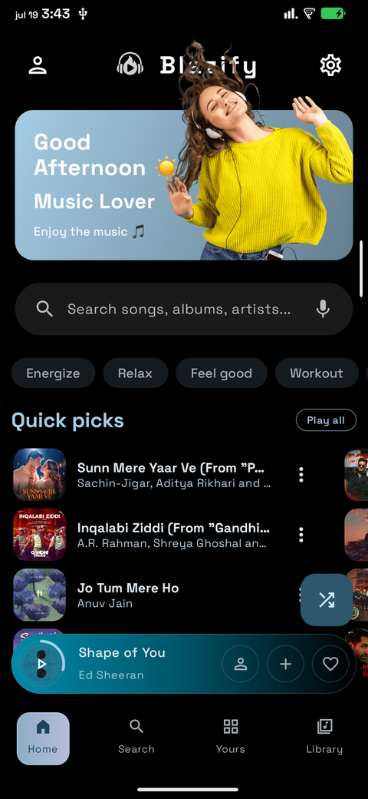
One player, built natively for each place you use it. Pick yours.
Streaming, offline downloads, synced lyrics, equalizer, Android Auto and home-screen widgets.
Download APKThe desktop player with its audio library bundled in. Installs without an administrator password.
Download for WindowsPodcasts, chapters, transcripts and media-key support. Three package shapes for any distribution.
Search, library, playlists and synced lyrics, sideloaded with SideStore or AltStore. No App Store needed.
Get it for iPhoneNot a block of text scrolling past. Every word lights up on its beat. And the colour comes from the artwork, so the app looks different for every song.
Ember
Blazify demo
You are being asked to install something from a stranger on the internet. These are the answers.
Every line of it is public. You can read the source, build it yourself, and check the file you downloaded against the one the build produces. That is more than you can do with almost anything on the Play Store.
It asks for no permissions it does not use, contains no advertising or analytics library of any kind, and sends nothing anywhere except to the services you switch on yourself.
Apps that stream audio from YouTube are removed from it. That is why none of the players in this category are there. It is a rule about distribution, not a judgement about the app.
Android shows that warning for any app not installed from a store, whoever wrote it. It is telling you that nobody has vetted the file. That is true, and it is exactly why the source being public matters.
No. It is an ordinary app and runs on any phone with Android 8.0 or newer.
Blazify checks for them itself and offers to download and install a new version when there is one.
If you would rather one app managed everything you sideload, Obtainium watches this project and updates it for you.
No. Search, playback, downloads, lyrics and the equalizer all work without an account.
Signing in with Google adds your own YouTube Music library, your playlists and history, and recommendations based on what you actually play. It is entirely optional and you can sign out at any time.
No more than any music player. It streams audio only, never video, so it uses less data and less battery than watching the same song on YouTube.
Nothing, and there is nothing to buy inside it. No advertisements, no subscription, no paid tier. It is free software under the GPL-3.0 licence.
Real screens, straight from the app. Colour is pulled from whatever is playing.
Home, with colour from the artwork
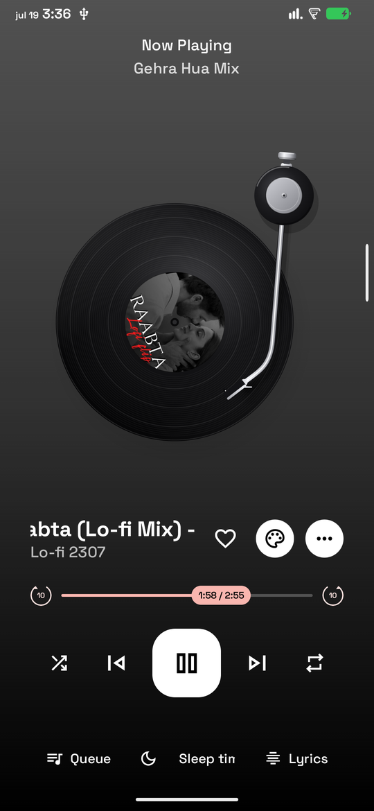
Player, one of five designs
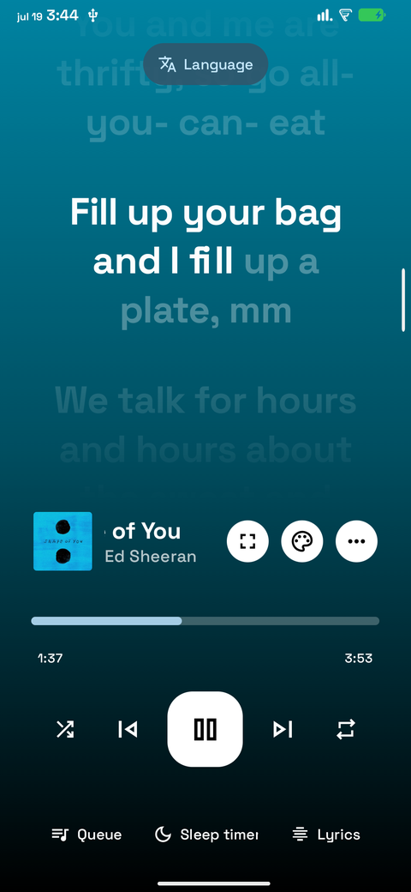
Lyrics, highlighted word by word
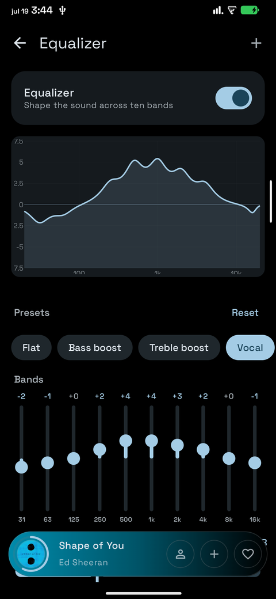
Equalizer, ten bands and 13 presets
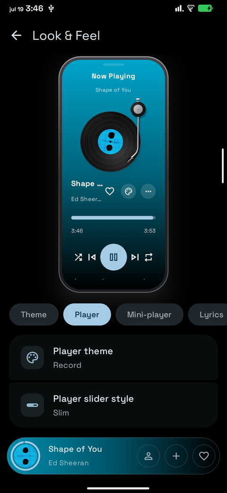
Look & Feel, with a live preview
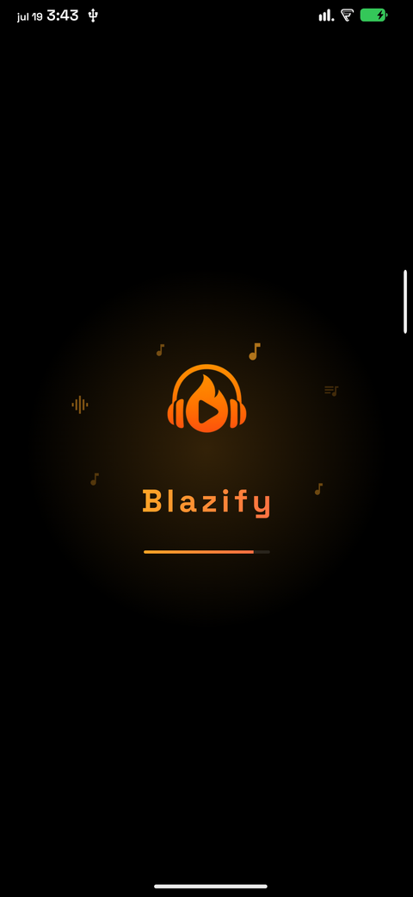
Splash
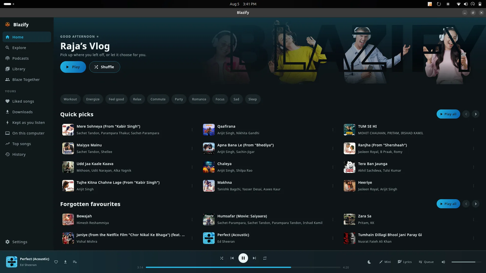
Home
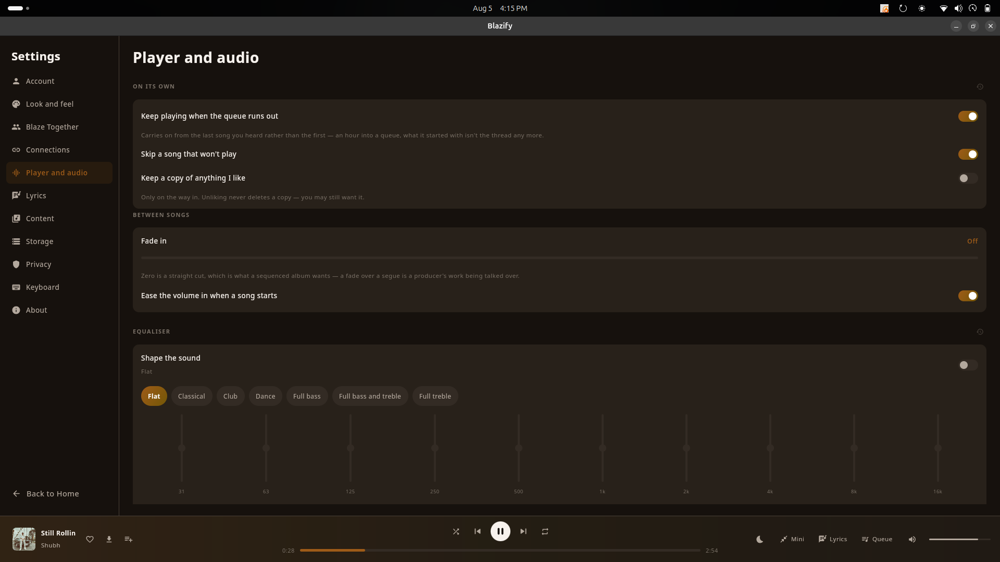
Player and audio
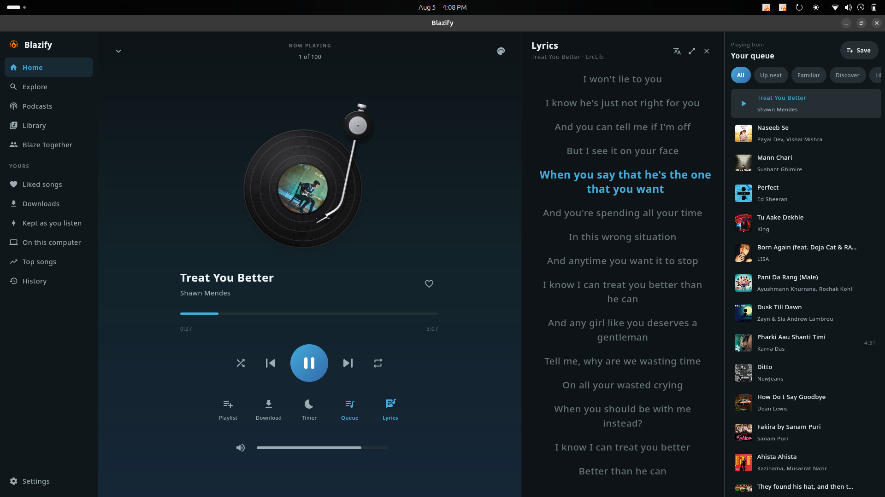
Full-screen lyrics
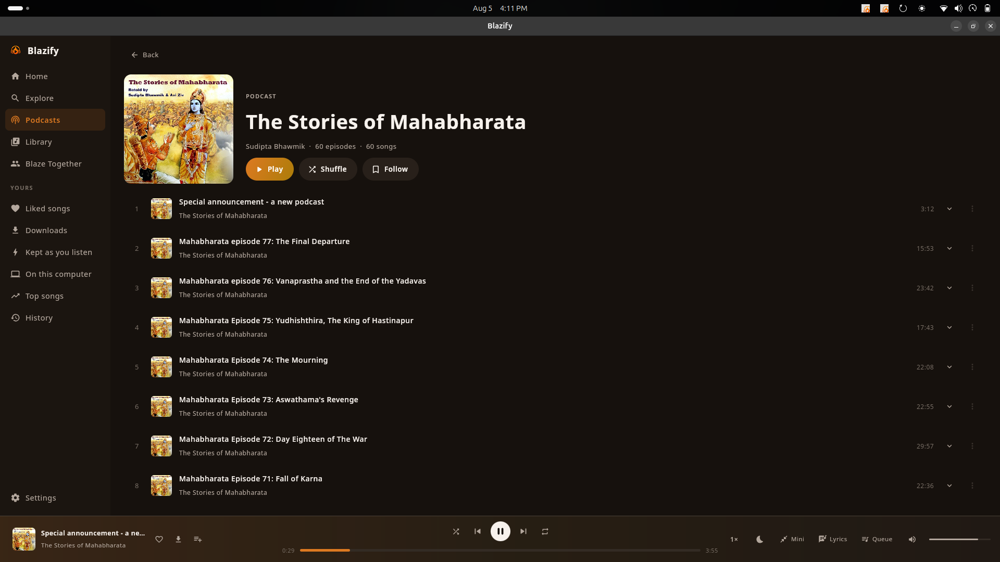
Podcasts, chapters and transcripts
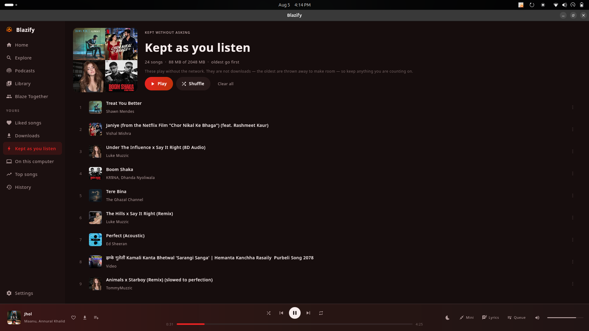
Kept as you listen
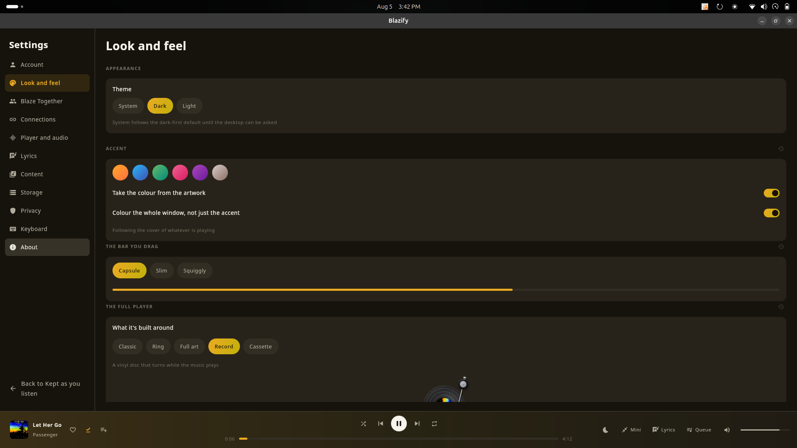
Look & Feel
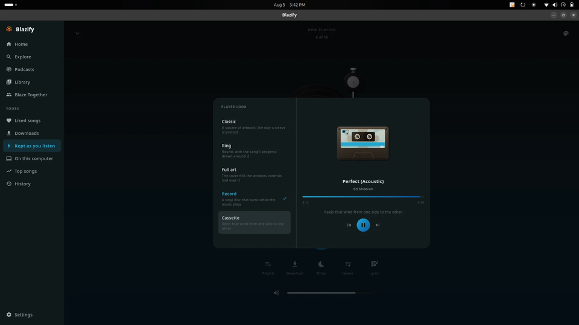
Five player designs
The things a music player should do, done properly. Works signed out; signs in when you want it to.
Search by name or browse songs, albums, artists and playlists.
Word-by-word highlighting, with translation and romanisation.
Thirteen presets, a live response curve, bass boost and reverb.
Keep anything for later, or let it hold songs as you play them.
The next track is ready before the current one ends.
Material You, or colour taken straight from the album artwork.
Share a room code and play in sync with friends.
Your whole library in one file. Move it to any device.
Optional. Sign in with Google and the recommendations start knowing what you actually play.
Your library, playlists, likes and history, the same on your phone, your desktop and the web.
Make new ones, edit them, or play the ones you already have. Changes go both ways.
Start an endless station from any song, artist or album when you want it to keep going.
Blazify has no advertising, no analytics and no tracking libraries of any kind. Nothing is sent anywhere except to the services you turn on yourself. Signing in is optional. Almost everything works without an account.
I built Blazify because every music app I tried wanted my money, my attention, or my data. Usually all three. This one asks for none of it. It is written in the open, it will stay free, and every release is tested on my own phone before anyone else gets it.